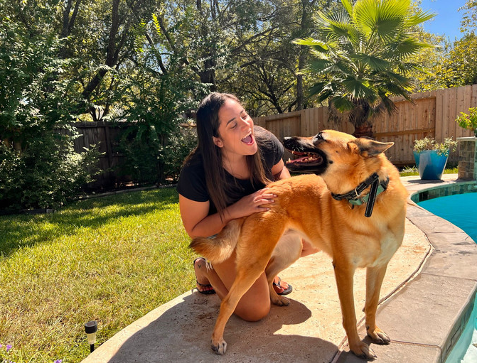

Hi! I'm Ellen, Owner & Creator of Pet Sitting Rubs&Hugs. Pet owner and animal lover. I'm originally from São Paulo, a big city located in Brazil. In 2018 I graduated college, I studied Veterinary Science for 5 years and obtained a Bachelor`s degree at Anhembi Morumbi University. While studying English in the US during my exchange program, I started to miss my cat and hamster back home and decided to start following my passion and care for animals again. I've been so lucky to make such good furry friends throughout my journey. The love and care I provide for each one is as if they were my own. I look forward to meeting you and your furry friends soon!
Pet Sitting Rubs&Hugs provides fun, entertainment, and personalized pet care through exceptional quality service for the owners and their pets. We develop genuine and long-lasting friendships with each animal because we know how important it is for the owner to have somebody to trust their best friends to. Our vision is to become one of the best companies that provides pet care service in the Houston Area. We will work toward expanding our capabilities to offer more care and build stronger relationships with new and current pets and owners.
